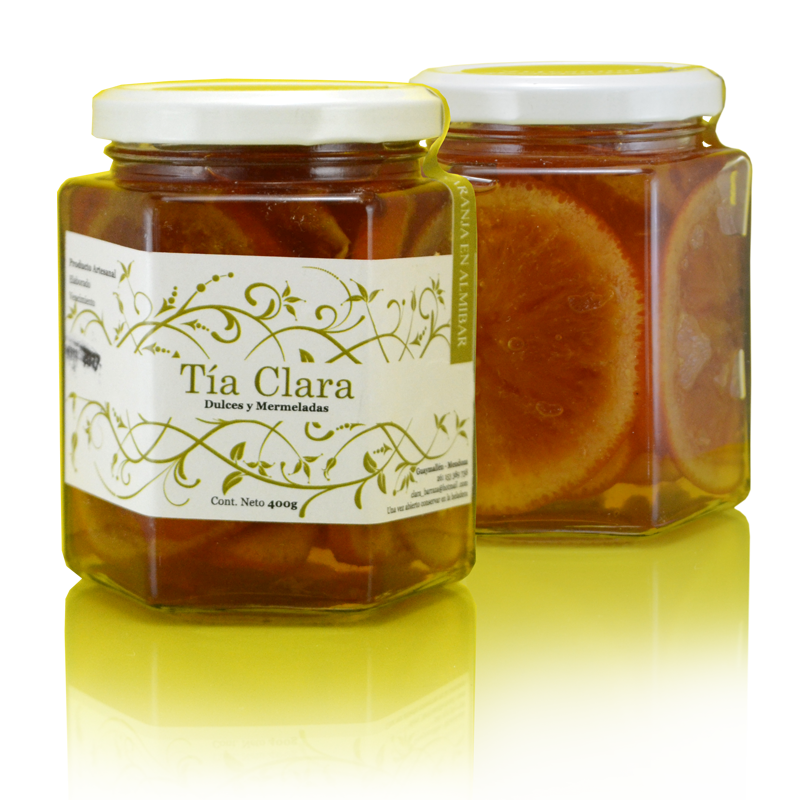

- FRUTAS EN ALMIBAR
-
NARANJAS
Un confitado suave y un aroma equilibrado.. Complemento ideal de quesos curados y frutos secos.
-
ZAPALLITOS

Con crema. (Espléndida con las carnes de ave, como por ejemplo el pollo y el pavo, y también con un redondo de ternera, y soberbia con unos calamares o unas gambas a la plancha.)
-
HIGO

Quedan perfectamente con quesos azules.
-
QUINOTOS

Queso de cabra o helado natural
-
BATATITAS

Resultan muy delicadas y ricas para comer solas como postre o con crema natural o queso.
-
- EN PAN
-
MEMBRILLO

Vigilante: con queso criollo y una rodaja de pan de membrillo
-